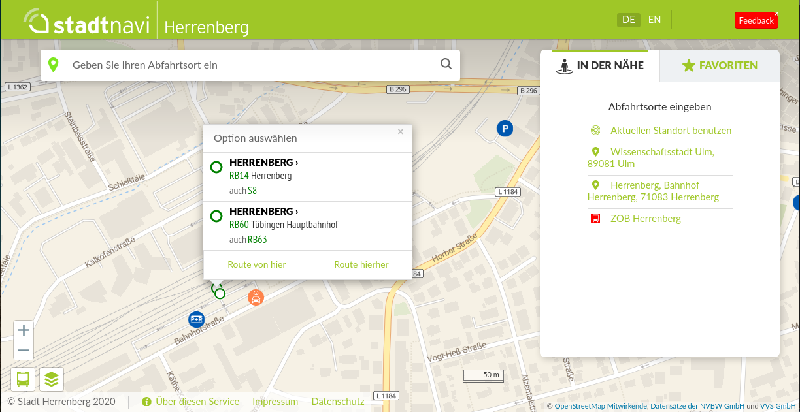

The transportkollektiv digitransit cookbook¶
Welcome to the transportkollektiv cookbook for installing, running and extending your very own digitransit instance!
{kind=link}
The aim of this documentation is to enable you and others to deploy digitransit for your own community and participate in the development efforts to improve existing features and add your own!
The approach we are describing within this document differs from the “official” digitransit architecture by HSL, the original developers and maintainers. It is tailored towards a small-ish rollout on off-the-shelf hardware and with manageable tooling – no enterprise-grade integration service required (although possible to do so at your own peril).
This is an ongoing effort to merge the experiences and learnings from 2017 through 2020 that have so far been scattered in E-Mail conversations and Slack and Matrix threads into one comprehensive documentation. As of now, consider this an unstable Alpha subject to change and already outdated information.
Indices and tables¶
Funded through EU-SHAREPLACE¶

This documentation was made possible through SHAREPLACE, which is part of Interreg CENTRAL EUROPE.